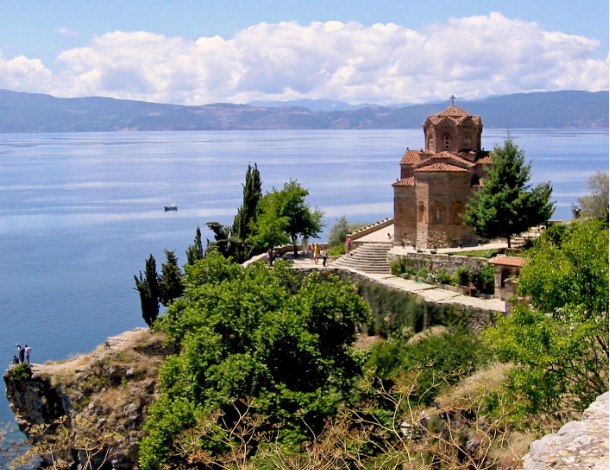

Стеван Ст. Мокрањац: Деsета Руковет (1902)
Stevan St. Mokranjac: Dixième Guirlande (1902)
"Песме са Охридa - Chants d'Ohrid "

Охридско језеро - Lac d'Ohrid
|
|
|
|
Везе ка песмама 1 - 5 -oOo- Liens vers les chants 1 - 5

Деcета Руковет
Изводи Хор РТВ-а Београд. Диригент: Младен Јагушт (мајор)
Хор Радио-телевизије Београд ред. Младен Јагушт (1. мај)
NOTE
|
Мокрањац је компоновао 10. Руковет током свог врхунца уметничке снаге и зрелости. Ово дело представља врхунац његовог стваралаштва у области световне музике и постало је врхунски пример уметничке стилизације фолклорних музичких тема. У 10. руковету постигнути су сви пожељни елементи: одличне мелодијске теме, јасне форме које се састоје од три брза и два спора наизменична става, као и мајсторска реализација хармонских решења. Мелодија „Биљана платно белеше” је пример једног од нових хармонских решења и сматра се успешном парафразом народне песме. Мокрањац овој песми удахњује нови живот, осцилирајући између бе-дура и ге-мола, и комбинације женских гласова и тенора. Друга песма „До три ми пушке пукнале” изазива прилично тужно расположење, док следећа трећа песма „Динка двори мете” звучи радосније. Четврту песму „Пушчи ме” одликује класична једноставност, која се сматра једним од Мокрањчевих најбоље изведених спорих ставова. Завршна песма „Никнало цвекје шарено” мелодично је уштимана и украшена подстицајним акордима. |
Mokranjac a composé la 10ème Rukovet alors qu'il était au sommet de son art et de sa maturité. Cette œuvre représente l'aboutissement de ses travaux en matière de musique profane et on peut y voir un modèle de stylisation de thèmes musicaux traditionnels. Dans la 10e Rukovet, tous les ingrédients d'un chefs d'oeuvre sont réunis: d'excellents thèmes mélodiques, où l'on reconnait sans peine trois mouvements rapides et deux mouvements lents alternés, et qui premettent la mise en œuvre de procédés harmoniques qui sont des cas d'école. La mélodie "Biljana platno beleše" est l'exemple de l'un de ces procédés harmoniques inédits et elle est considérée comme une paraphrase réussie de la chanson populaire. Mokranjac insuffle une nouvelle vie à cette chant qui louvoie entre deux tonalités: si bémol majeur et sol mineur, dans une étonnante combinaison de voix féminines et d'un ténor. Le deuxième chant "Do tri mi puške puknale" installe une atmosphère plutôt triste, tandis que le chant suivant (le 3ème) "Dinka dvori mete" semble plus joyeux. Le quatrième chanson "Pušči me" se caractérise par sa simplicité classique, qui est considérée comme l'un des mouvements lents les plus réussis de Mokranjac. La chant de conclusion "Niknalo cvekje šareno" est composé d'accords dont les uns soulignent la mélodie et les autres constituent des ornements stimulants. Source: Wikipédia |